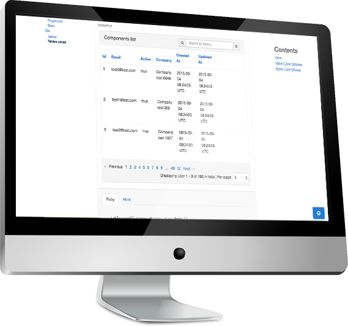

Ui Bibz
Bootstrap Framework with Ruby on Rails
One component to rule them all
 Library Ui Bibz is based on
one component. All components inherit from
Library Ui Bibz is based on
one component. All components inherit from component
element. No need to write HTML,
CSS or Javascript.
Component are based on Bootstrap and all new
version are managed by Ui Bibz. The framework is
written with Ruby for
Ruby on Rails.
A component will always write the same way even if HTML, CSS or Javascript code change. You can find all components of Bootstrap 5 and more.
Ui
Core Framework
Alerts, inputs, breadcrumbs, cards, cols, buttons, dropdowns and +30 components are available right now.
Content, options, html_options
Ui Bibz component is based on Ruby on Rails link_to method with some specificity.
def component content = nil, options = nil, html_options = nil, &block
end
The content can be inserting inline on content variable or by
block.
Options and html_options are hashes present to configure the
component or his html.
That's All !
All components are based on this fundamental principe. Some elements are variant but copy on the same model.
Simple and efficient
Library is organized by namespace like
UiBibz::Ui::Buttons::ButtonLink and to
facilitate and improve use of Ui Bibz, helpers are created for
calls
render of component very easily with simple methods: cols,
dropdown, button_link...
All input components are compatible with simple_form to create forms very easily.
Tested, Gemified, Installed
Ux
Extension for Users
Ux interface with complex components created by developers for developers
An extensible library

Ui Bibz library is extensible with complex components.
Usually, there are mixed components like card_table (table in
card) with a search engine, pagination and sortable columns.
Components can contain Javascript, Html and CSS but the philosophy of the library for the user is to configure a component without writing HTML, Javascript or CSS code.
And After
Futurs developments
Library Open Source ready to be forked.
Open Source and forkable
The goal of the library is to help developers to build interface very quickly and easily without writing html, javascript or css. Ui Bibz is Open Source (MIT licence) and all people can fork the code to create new components.
Technology: Ruby on Rails / Javascript (Vanilla) / HTML and CSS (SASS)